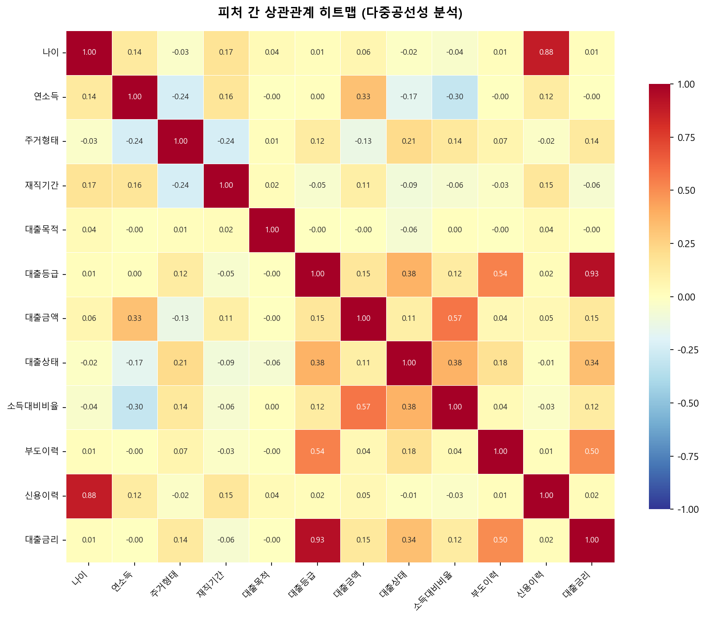
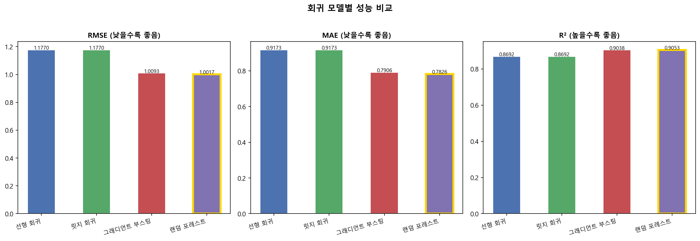
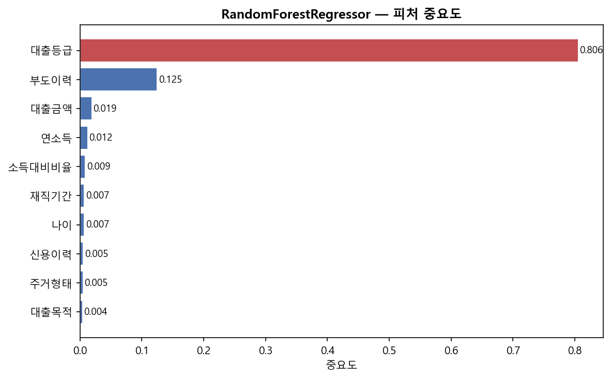
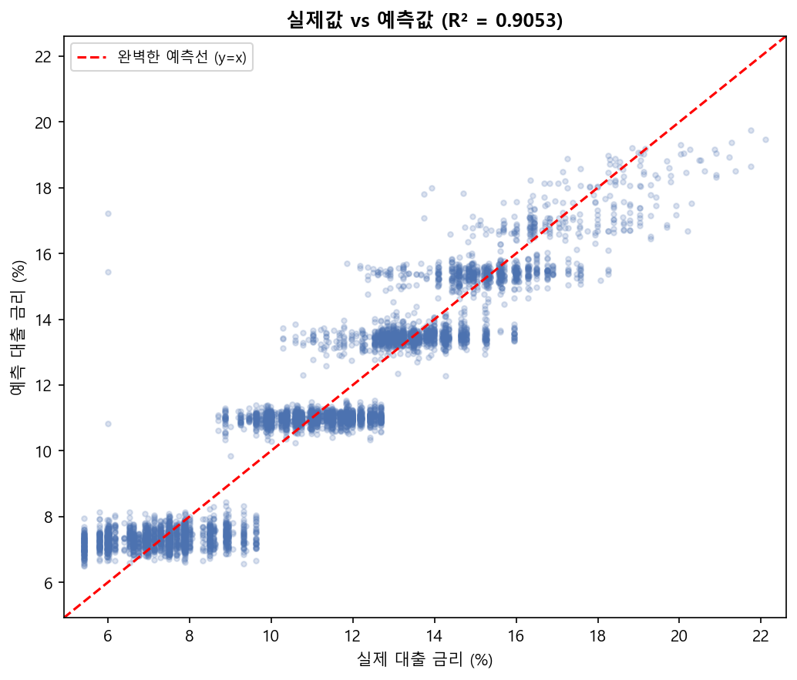

대출 신청자의 소득·신용 이력·대출 조건으로 적정 금리를 예측하는 회귀 모델을 만들었습니다. 선형 회귀부터 앙상블까지 4개 모델을 같은 조건에서 비교하고, 튜닝을 거쳐 최종 모델을 Flask REST API와 Streamlit 웹앱으로 배포했습니다.
대출 금리는 신청자의 신용도와 대출 조건에 따라 결정되지만, 그 관계는 단순한 비례가 아닙니다. 같은 대출 등급 안에서도 소득 대비 대출 비율이나 과거 부도 이력에 따라 금리가 갈립니다. 이 비선형 관계를 모델이 얼마나 설명할 수 있는지를 확인하는 것이 목표였습니다.
Kaggle의 Credit Risk Dataset(32,581건)을 선택했습니다. 실제 금융 데이터에 가까운 구조를 가지면서
공개 벤치마크라 결과를 검증하기 쉽다는 점이 이유였습니다.
목표변수는 loan_int_rate(대출 금리 %)이고, 11개 피처를 독립변수로 사용했습니다.
전처리부터 배포까지를 하나의 단방향 흐름으로 설계했습니다.
학습과 서빙을 분리해, 학습 결과물(.pkl)을 Flask API와 Streamlit 앱이 공유하는 구조입니다.
.pkl을 읽으므로 예측 결과가 항상 일치한다.
결측치가 있는 두 컬럼을 같은 방식으로 처리할 수 없었습니다.
loan_int_rate는 목표변수라 값이 없으면 학습에 쓸 수 없어 행 자체를 삭제했고,
person_emp_length(재직기간)는 이직 등으로 미입력되는 경우가 있다고 판단해 중앙값으로 대체했습니다.
| 컬럼 | 결측치 | 처리 | 근거 |
|---|---|---|---|
loan_int_rate | 3,116개 | 행 삭제 | 목표변수 — 대체 시 정답을 지어내는 셈 |
person_emp_length | 895개 | 중앙값 대체 | 미입력이 흔한 항목 — 행 삭제는 과한 손실 |
이상치는 나이 100세 초과·재직기간 60년 초과 행을 제거했습니다. 전처리 후 29,459행이 남아 원본 대비 약 9.6% 감소했습니다.

loan_grade(대출 등급)와 금리의 상관이 두드러진다.
EDA 단계에서 loan_grade가 금리와 압도적으로 강한 상관을 보였습니다.
이건 예측에는 유리하지만, 뒤집어 보면 모델이 등급 하나만 보고도 어느 정도 맞힐 수 있다는 뜻이기도 합니다.
그래서 선형 모델과 앙상블 모델의 성능 차이가 "등급 내부의 분산을 얼마나 설명하느냐"에서 갈릴 것이라 예상했고, 실제로 그렇게 나왔습니다.
같은 전처리 데이터와 같은 분할 조건에서 4개 모델을 학습해 RMSE·MAE·R²로 비교했습니다. 베이스라인(선형 회귀)을 먼저 세워 앙상블의 개선폭을 정량적으로 확인하는 순서로 진행했습니다.
| 지표 | 선형 회귀 | 릿지 회귀 | 그래디언트 부스팅 | 랜덤 포레스트 |
|---|---|---|---|---|
| R² ↑ | 0.8692 | 0.8692 | 0.9038 | 0.9053 |
| RMSE ↓ | 1.1770 | 1.1770 | 1.0093 | 1.0017 |
| MAE ↓ | 0.9173 | 0.9173 | 0.7906 | 0.7826 |

선형 회귀와 릿지 회귀가 소수점 4자리까지 동일하게 나온 점이 눈에 띄었습니다. 릿지의 L2 정규화가 성능을 바꾸지 못했다는 뜻인데, 이는 피처 수가 10개로 적고 다중공선성이 심하지 않아 정규화가 개입할 여지가 거의 없었기 때문으로 해석했습니다. 즉 이 데이터에서 과적합은 문제가 아니었고, 선형 모델의 한계는 표현력 부족이었습니다.
최종적으로 RandomizedSearchCV로 하이퍼파라미터를 탐색해
(n_estimators=200, max_depth=15, max_features=0.5, min_samples_leaf=1)
랜덤 포레스트가 전 지표 최우수를 기록했고, 이를 배포 모델로 채택했습니다.

loan_grade가 지배적이다.
모델 학습보다 배포에서 더 많이 막혔습니다. 로컬에서 잘 되던 것이 Streamlit Cloud에서 연달아 깨졌고, 원인은 대부분 "로컬 환경에만 있는 것"에 의존하고 있었다는 점이었습니다.
로컬에서 정상이던 matplotlib 차트의 한글 라벨이 Streamlit Cloud에서 모두 네모(□)로 표시됐습니다.
로컬(Windows)에는 Malgun Gothic이 기본 설치돼 있지만, Streamlit Cloud의 리눅스 이미지에는 한글 폰트가 아예 없었습니다. matplotlib이 폰트를 찾지 못해 대체 글리프를 출력한 것입니다.
packages.txt에 OS 패키지로 fonts-nanum을 추가하고, 앱 시작 시 fm.fontManager.addfont()로 폰트 경로를 직접 등록했습니다. 설치만으로는 matplotlib이 인식하지 못해 등록 단계가 필요했습니다.
__pyx_unpickle AttributeError
로컬에서 저장한 .pkl을 배포 환경에서 불러올 때 역직렬화 오류가 발생했습니다.
학습 환경과 배포 환경의 scikit-learn 버전이 달랐습니다. pickle은 클래스 내부 구조에 의존하므로, 버전이 다르면 같은 파일도 복원에 실패합니다.
requirements.txt에 scikit-learn==1.4.0으로 정확한 버전을 고정했습니다. 범위 지정(>=)으로는 재발을 막을 수 없다고 판단했습니다.
직렬화된 모델은 코드가 아니라 환경까지 포함한 산출물입니다. 모델을 배포한다는 건 라이브러리 버전을 함께 배포한다는 뜻이라는 걸 이때 이해했습니다.
분류 모델 .pkl이 67MB로 커져 GitHub에서 대용량 파일 경고가 발생했습니다.
랜덤 포레스트는 트리를 통째로 저장하므로 n_estimators에 파일 크기가 비례합니다. 200개 트리가 그대로 직렬화되고 있었습니다.
트리 수를 200 → 50으로 줄이고(17MB), 이후 joblib.dump(..., compress=3)을 적용해 2.92MB까지 낮췄습니다. 성능 저하는 무시할 수준이었습니다.
loan_grade는 금리와 상관이 매우 높은데, 실무에서 등급 자체가 금리 산정 결과로 매겨지는 값이라면 이는 사실상 정답을 미리 보는 피처일 수 있습니다. 등급을 제외한 모델도 함께 학습해 비교했어야 했습니다.Pipeline에 담아 저장했다면 학습·서빙 불일치 위험이 줄었을 것입니다.RMSE 약 1.0%p는 "예측 금리가 실제와 평균 1%p 정도 차이난다"는 뜻입니다. 참고 지표로는 쓸 만하지만 실제 금리 산정에 쓰기에는 부족하며, 무엇보다 이 데이터셋이 특정 시점·특정 시장의 스냅샷이라 시계열 변화를 전혀 반영하지 못합니다.